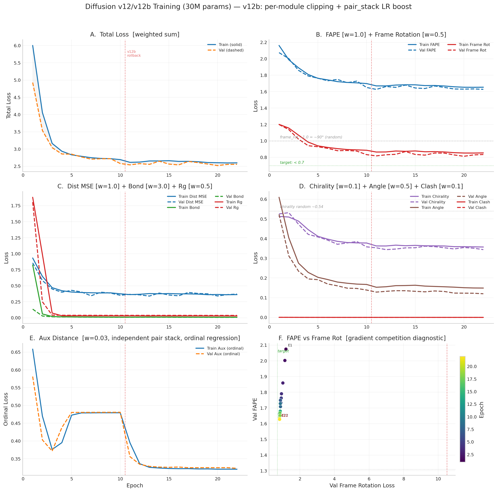
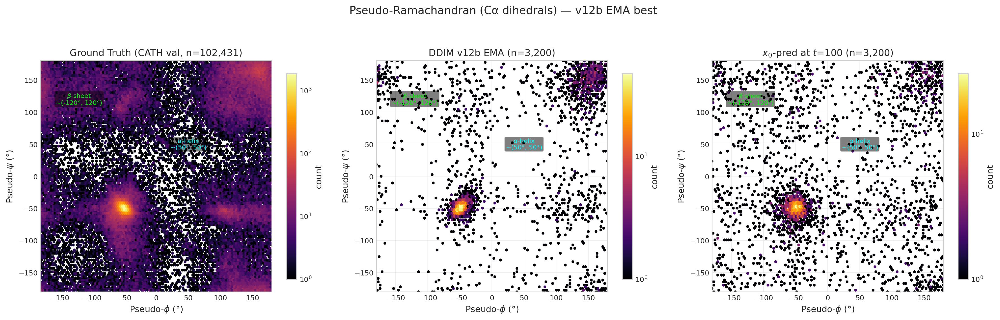
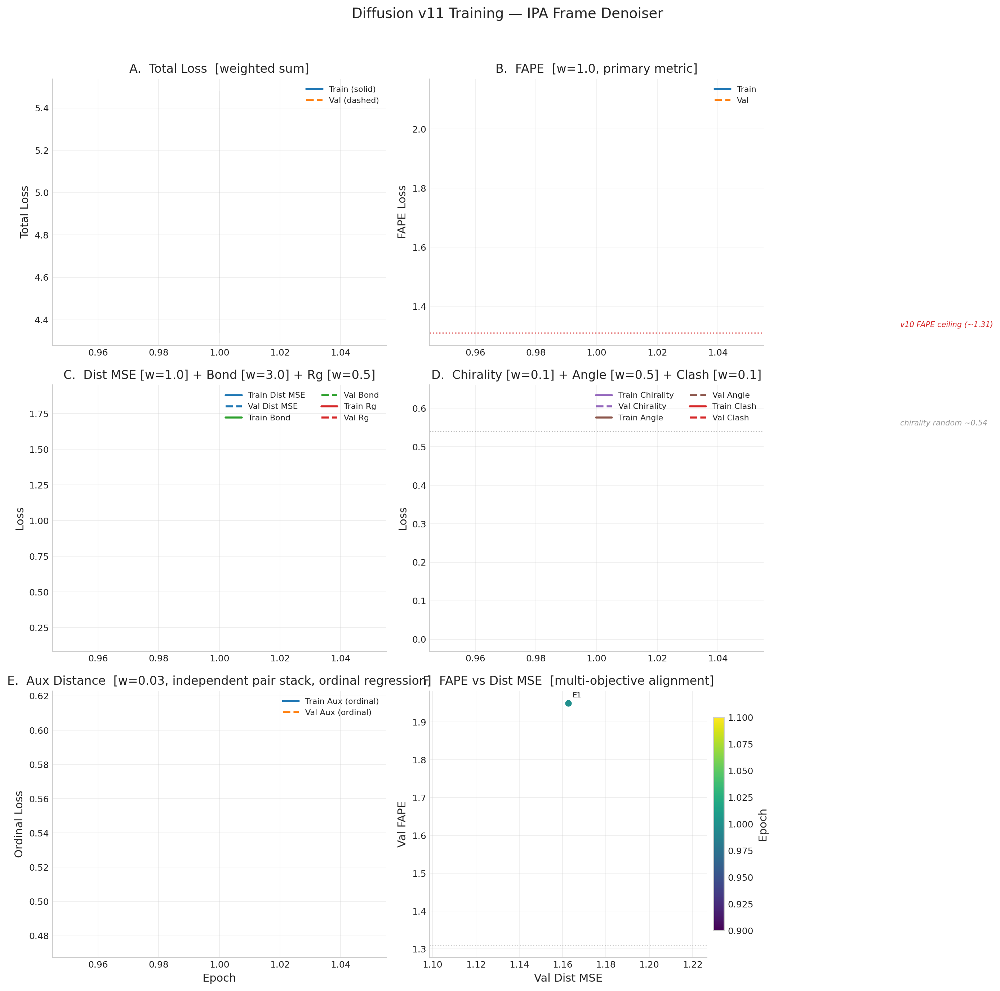
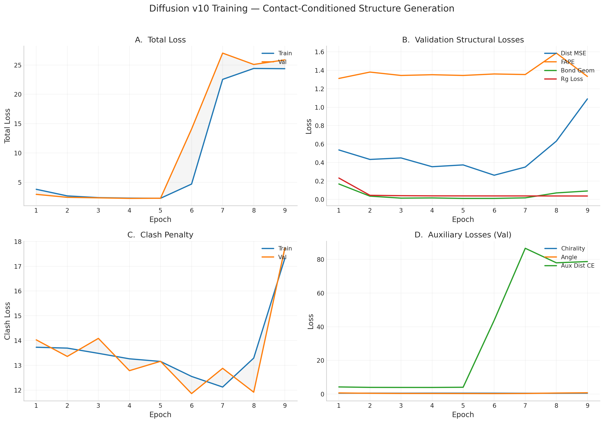
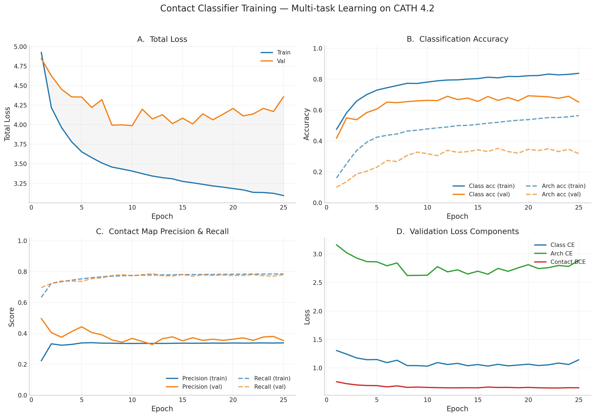
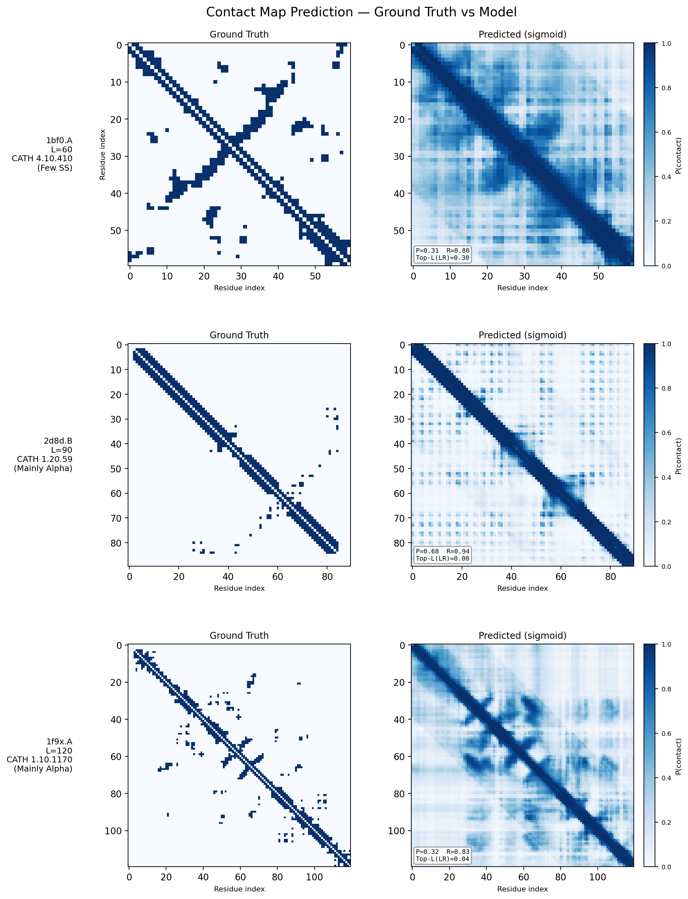
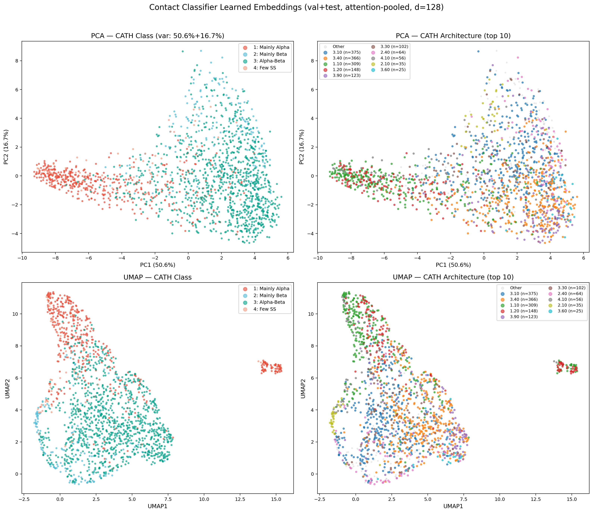

Full architecture history, training tables, loss functions, and analysis for the protein backbone diffusion model.
EnhancedPairBlock blocks. Each block applies: (1) triangle multiplicative update (outgoing), (2) triangle multiplicative update (incoming), (3) row + column axial attention + FFN. The triangle updates implement transitivity: "if i contacts k and j contacts k, then i and j are structurally related." This is exactly how beta-sheet topology is encoded — two strands share contacts via loop residues. Hidden dim: tri_mul_dim=64, d_pair=128.
max_rel_pos=32 with 128 log-spaced bins covering 0–512 residues. The old RPE was zero for |i-j| > 32, making long-range sheet contacts invisible. New encoding: fine linear bins for positions 0–8 (helices: i+3, i+4), log-spaced bins for positions 8–512 (sheets: i+20..i+100+), sign-aware (separate embeddings for upstream/downstream). Additionally, sinusoidal continuous RPE features (32-dim sin/cos encoding projected to d_pair) provide smooth interpolation between bins.
p_uncond=0.1). When triggered, residue tokens are replaced with MASK tokens (preserving CLS/EOS/PAD structure) so the model learns unconditional generation. At sampling time, enables CFG: eps = eps_uncond + w * (eps_cond - eps_uncond). Critical fix: using PAD as the null token caused mask = ids.ne(PAD) to return all-False, creating degenerate all-masked pair representations that produced NaN. Using MASK instead preserves valid attention masks.
eta_min=1e-6.
Per-module LR groups: pair_stack at 3x base LR (6e-5), aux_pair at 2x.
eta parameter to fix mode collapse observed in pure DDIM (eta=0) sampling. Adding stochasticity (eta > 0) diversifies generated structures while maintaining quality.
Three sources of numerical instability discovered and fixed during v12/v13 development:
torch.cdist backward produces NaN when distance is exactly zero (self-distances and coincident masked-out coords at the origin). Replaced with manual computation: (diff.pow(2).sum(-1) + 1e-10).sqrt().| Epoch | Val Total | FAPE | Frame Rot | Dist MSE | Bond | Aux Dist | Chirality | Angle | Rg | DDIM TM | Status |
|---|---|---|---|---|---|---|---|---|---|---|---|
| 1 | 2.571 | 1.657 | 0.846 | 0.353 | 0.009 | 0.323 | 0.347 | 0.130 | 0.036 | 0.114 | NEW BEST |
| 2 | 2.494 | 1.610 | 0.792 | 0.359 | 0.007 | 0.324 | 0.336 | 0.115 | 0.036 | — | NEW BEST |
After just 2 epochs, v13 already surpasses v12b’s first epoch (b1) on all structural metrics: FAPE 1.610 vs 1.627, frame_rot 0.792 vs 0.818, val_total 2.494 vs 2.541. For context, v12b required 16 epochs of continued training (with per-module gradient clipping) to reach frame_rot 0.780 — v13 is nearly there at E2. The deeper pair stack with triangle multiplicative updates appears to provide much stronger structural signal from the start, likely because the 8-block pair stack with log-scaled RPE can propagate long-range contact information that the v12b 4-block stack (max_rel=32) could not represent at all. Note: DDIM sampling runs every 5 epochs in v13, so TM-score will next be reported at E5.

Loss curves from the plotting script. v13 overlay will appear as training epochs complete.
v10 used an 8-layer EGNN denoiser that learned pairwise distance statistics well (dist_mse 60% below random) but could not learn protein topology. FAPE stayed at its random baseline (~1.31) across 21 epochs and TM-score peaked at 0.131 (random ~0.10). EGNN has no concept of local reference frames — it reasons about distances, not backbone geometry. IPA solves this by maintaining and refining per-residue rigid-body frames (rotation + translation) through 3D point attention in local coordinate systems.
1 - cos(angle) between learned R and Gram-Schmidt ground truth. Gives rotation quaternions direct gradient for the first time.fape_loss_with_frames uses R_pred from IPA layers instead of rebuilding from coordinates. The R → FAPE gradient path is now intact.| Loss | v11 | v11b/v12b | Rationale |
|---|---|---|---|
| FAPE (w/ learned R) | 1.0 | 1.0 | v11b uses learned R_pred instead of Gram-Schmidt rebuilt frames |
| Frame Rot | — | 0.5 | NEW: direct angular loss on learned R vs ground truth. The v11b fix. |
| Bond | 3.0 | 3.0 | — |
| Clash | 0.1 | 0.1 | — |
| Aux dist | 0.03 | 0.03 | — |
| Dist MSE | 1.0 | 1.0 | — |
| Chirality | 0.1 | 0.1 | — |
| Angle | 0.5 | 0.5 | — |
| Rg | 0.5 | 0.5 | — |

Pseudo-dihedrals computed from consecutive Cα positions. Ground truth (left) shows clear α-helix (~50°,50°) and β-sheet (~−120°,120°) clusters.
| Epoch | Val Total | Val FAPE | Val Frame Rot | Val Dist | Val Bond | DDIM TM | DDIM RMSD | Status |
|---|---|---|---|---|---|---|---|---|
| 1 | 4.928 | 2.074 | 1.199 | 0.857 | 0.135 | 0.101 | 15.28Å | NEW BEST |
| 2 | 3.538 | 2.002 | 1.138 | 0.581 | 0.028 | 0.132 | 13.73Å | NEW BEST |
| 3 | 3.041 | 1.859 | 1.022 | 0.449 | 0.016 | 0.118 | 15.33Å | NEW BEST |
| 4 | 2.856 | 1.790 | 0.942 | 0.399 | 0.013 | 0.103 | 16.56Å | NEW BEST |
| 5 | 2.852 | 1.763 | 0.929 | 0.428 | 0.013 | 0.101 | 16.88Å | NEW BEST |
| 6 | 2.771 | 1.732 | 0.910 | 0.403 | 0.010 | 0.102 | 16.99Å | NEW BEST |
| 7 | 2.707 | 1.749 | 0.881 | 0.343 | 0.010 | 0.099 | 17.26Å | NEW BEST |
| 8 | 2.719 | 1.708 | 0.884 | 0.399 | 0.009 | 0.099 | 17.23Å | pat 1 |
| 9 | 2.720 | 1.728 | 0.876 | 0.386 | 0.008 | 0.101 | 17.04Å | pat 2 |
| 10 | 2.581 | 1.651 | 0.833 | 0.352 | 0.008 | 0.102 | 17.09Å | NEW BEST |
| 11 | 2.685 | 1.684 | 0.864 | 0.391 | 0.009 | 0.098 | 17.41Å | pat 1 |
| 12 | 2.831 | 1.804 | 0.905 | 0.391 | 0.009 | 0.087 | 18.46Å | pat 2 |
| 13 | 2.822 | 1.814 | 0.913 | 0.370 | 0.009 | 0.078 | 19.54Å | pat 3 |
| — v12b rollback to E10 EMA — per-module grad clipping, pair_stack 3x LR, tripwire | ||||||||
| b1 | 2.541 | 1.627 | 0.818 | 0.366 | 0.008 | 0.102 | 16.98Å | NEW BEST |
| b2 | 2.577 | 1.662 | 0.831 | 0.358 | 0.008 | 0.105 | 16.89Å | pat 1 |
| b3 | 2.555 | 1.652 | 0.837 | 0.339 | 0.009 | 0.103 | 17.09Å | pat 2 |
| b4 | 2.648 | 1.680 | 0.870 | 0.386 | 0.009 | 0.107 | 16.88Å | pat 3 |
| b5 | 2.565 | 1.644 | 0.835 | 0.356 | 0.008 | 0.104 | 17.02Å | pat 4 |
| b6 | 2.540 | 1.638 | 0.827 | 0.343 | 0.007 | 0.108 | 16.80Å | pat 5 |
| b7 | 2.641 | 1.668 | 0.852 | 0.396 | 0.008 | 0.113 | 16.47Å | pat 6 |
| b8 | 2.607 | 1.651 | 0.851 | 0.379 | 0.008 | 0.113 | 16.39Å | pat 7 |
| b9 | 2.564 | 1.632 | 0.829 | 0.374 | 0.007 | 0.112 | 16.40Å | pat 8 |
| b10 | 2.521 | 1.630 | 0.813 | 0.341 | 0.006 | 0.113 | 16.42Å | NEW BEST |
| b11 | 2.553 | 1.633 | 0.829 | 0.362 | 0.006 | 0.110 | 16.52Å | pat 1 |
| b12 | 2.558 | 1.628 | 0.835 | 0.370 | 0.007 | 0.111 | 16.56Å | pat 2 |
| b13 | 2.534 | 1.635 | 0.826 | 0.343 | 0.007 | 0.110 | 16.64Å | pat 3 |
| b14 | 2.500 | 1.606 | 0.814 | 0.349 | 0.006 | 0.107 | 17.13Å | NEW BEST |
| b15 | 2.480 | 1.586 | 0.807 | 0.391 | 0.006 | 0.112 | 16.62Å | NEW BEST |
| b16 | 2.469 | 1.564 | 0.780 | 0.347 | 0.006 | 0.112 | 16.62Å | NEW BEST |
| b17 | 2.506 | 1.608 | 0.815 | 0.355 | 0.006 | 0.110 | 16.88Å | pat 1 |
| b18 | 2.497 | 1.626 | 0.809 | 0.335 | 0.005 | 0.108 | 16.83Å | pat 2 |
| b19 | 2.517 | 1.607 | 0.820 | 0.365 | 0.006 | 0.110 | 16.92Å | pat 3 |
| b20 | 2.446 | 1.578 | 0.802 | 0.334 | 0.005 | 0.103 | 17.53Å | NEW BEST |
| b21 | 2.482 | 1.589 | 0.797 | 0.362 | 0.006 | 0.104 | 17.54Å | pat 1 |
| b22 | 2.488 | 1.607 | 0.801 | 0.347 | 0.005 | 0.107 | 17.42Å | pat 2 |
| b23 | 2.609 | 1.641 | 0.842 | 0.408 | 0.006 | 0.106 | 17.61Å | pat 3 |
| b24 | 2.450 | 1.589 | 0.799 | 0.329 | 0.006 | 0.102 | 17.80Å | pat 4 |
| b25 | 2.456 | 1.604 | 0.807 | 0.320 | 0.005 | 0.101 | 18.02Å | pat 5 |
| b26 | 2.460 | 1.597 | 0.796 | 0.335 | 0.005 | 0.101 | 18.02Å | pat 6 |
| b27 | 2.548 | 1.635 | 0.839 | 0.364 | 0.005 | 0.105 | 17.69Å | pat 7 |
| b28 | 2.501 | 1.626 | 0.813 | 0.342 | 0.005 | 0.107 | 17.53Å | pat 8 |
| b29 | 2.443 | 1.578 | 0.791 | 0.340 | 0.005 | 0.110 | 17.02Å | NEW BEST |
| b30 | 2.413 | 1.584 | 0.790 | 0.312 | 0.005 | 0.107 | 17.38Å | NEW BEST |
| b31 | 2.462 | 1.587 | 0.808 | 0.342 | 0.005 | 0.108 | 17.43Å | pat 1 |
Per-loss gradient directions on shared parameters (denoiser + pair_stack). Negative cosine = direct competition. Positive = aligned.
| Loss Pair | E10 (best) | E12 | E13 | Verdict |
|---|---|---|---|---|
| FAPE vs frame_rot | +0.59 | +0.57 | +0.50 | Aligned |
| dist_mse vs FAPE | +0.16 | +0.14 | +0.41 | Near-orthogonal |
| dist_mse vs frame_rot | +0.24 | +0.00 | -0.02 | Near-orthogonal |
| FAPE vs bond_geom | -0.04 | -0.23 | +0.02 | Near-orthogonal |
Key finding: No gradient competition between any loss pair. FAPE and frame_rot are strongly aligned (+0.5 to +0.6). The E11-E13 regression was caused entirely by gradient starvation of the pair_stack module — not conflicting loss objectives.
| Hypothesis | Result |
|---|---|
| Frame confidence starving updates | NO — 57.7% conf > 0.5 |
| Gradients dead at frame_update | NO — highest grad norm (4.017) |
| FAPE gradient reaches frame_update | YES — 13.03 (largest) |
| Learned R used in output | NO — R discarded |
Root cause (v11): x0_pred = t_vec discarded learned R. v11b fix: frame_rotation_loss + fape_loss_with_frames using learned R.
| Metric | w | Type | v11b E1 | v11b E5 | v12 E1 | v12 E10 | Target / Interpretation |
|---|---|---|---|---|---|---|---|
| FAPE | 1.0 | L1 | 1.934 | 1.756 | 2.074 | 1.651 | Primary metric. Uses learned R_pred frames. v10 ceiling=1.31, untrained >2.0. <1.0 = correct folds. |
| Frame Rot | 0.5 | 1−cosθ | 1.067 | 0.888 | 1.199 | 0.833 | Angular error of learned R vs Gram-Schmidt truth. 1.0 = ~90° (random), 0 = perfect. Target: <0.5 by E15. |
| Dist MSE | 1.0 | MSE | 0.409 | 0.384 | 0.857 | 0.352 | Pairwise Cα distance error. <0.1 = sub-Å accuracy. Plateauing ~0.35–0.40. |
| Bond | 3.0* | MSE | 0.015 | 0.010 | 0.135 | 0.008 | Cα–Cα bond error. *annealed 1→3. Solved. |
| Rg | 0.5 | MSE | 0.038 | 0.038 | 1.805 | 0.038 | Radius of gyration error. Converged by E3. |
| TM-score | — | DDIM | 0.094 | 0.091 | 0.101 | 0.102 | 50-step DDIM. Target: >0.15 by E10, >0.30 by E20. >0.17 = recognizable folds. |
| RMSD | — | DDIM | 17.22Å | 17.62Å | 15.28Å | 17.09Å | <10Å = partial fold. <5Å = high quality. |
v11b validated the IPA + frame rotation loss design. Best epoch E8: FAPE 1.655, frame_rot 0.830, TM 0.093. After E8, gradient competition between dist_mse and frame_rot through shared 128-dim single representation caused collapse — TM dropped to 0.061, frame_rot reverted to 0.926. Stopped at E14.
| Epoch | Val Total | Val FAPE | Frame Rot | Val Dist | Val Bond | DDIM TM | Status |
|---|---|---|---|---|---|---|---|
| 1 | 3.057 | 1.934 | 1.067 | 0.409 | 0.015 | 0.094 | BEST |
| 5 | 2.736 | 1.756 | 0.888 | 0.384 | 0.010 | 0.091 | BEST |
| 8 | 2.580 | 1.655 | 0.830 | 0.351 | 0.009 | 0.093 | BEST (peak) |
| 11 | 2.797 | 1.813 | 0.880 | 0.374 | 0.008 | 0.079 | pat 3 |
| 14 | 2.973 | 1.898 | 0.926 | 0.423 | 0.011 | 0.061 | pat 6 (stopped) |
v11 used the same IPA architecture but had a critical bug: x0_pred = t_vec discarded
learned rotation matrices R. FAPE peaked at 1.818 (E10) then degraded to 2.052 (E15).
DDIM TM-score collapsed from 0.095 to 0.046.

| Epoch | Val Total | Val FAPE | Val Dist | Val Bond | DDIM TM | Status |
|---|---|---|---|---|---|---|
| 1 | 4.338 | 1.950 | 1.163 | 0.171 | 0.099 | BEST |
| 3 | 2.741 | 1.988 | 0.479 | 0.022 | 0.128 | BEST |
| 6 | 2.558 | 1.865 | 0.448 | 0.019 | 0.095 | BEST |
| 10 | 2.431 | 1.818 | 0.382 | 0.015 | 0.087 | BEST (peak) |
| 13 | 2.539 | 1.919 | 0.380 | 0.016 | 0.053 | pat 3 |
| 15 | 2.726 | 2.052 | 0.411 | 0.019 | 0.046 | pat 5 (stopped) |
v10 used an 8-layer EGNN denoiser (14.6M params). After 21 epochs: dist_mse 60% below random (0.218), bond essentially solved (0.006), but FAPE stuck at random (~1.31) and TM-score peaked at 0.131. Best val structural = 0.805 (E16). DDIM best: TM=0.131, RMSD=14.53Å.

| Epoch | Val Total Loss | Train Class Acc | Val Class Acc | Train Arch Acc | Contact Recall (Val) | Contact BCE (Val) | LR | Status |
|---|---|---|---|---|---|---|---|---|
| 1 | 4.846 | 47.5% | 41.8% | 16.1% | 69.6% | 0.759 | 3.33e-05 | NEW BEST |
| 2 | 4.626 | 58.2% | 54.9% | 25.4% | 72.3% | 0.725 | 6.67e-05 | NEW BEST |
| 3 | 4.454 | 65.9% | 53.8% | 33.8% | 73.9% | 0.702 | 1.00e-04 | NEW BEST |
| 4 | 4.356 | 70.0% | 58.4% | 39.2% | 73.8% | 0.693 | 1.33e-04 | NEW BEST |
| 5 | 4.354 | 72.9% | 60.7% | 42.4% | 73.7% | 0.691 | 1.67e-04 | NEW BEST |
| 6 | 4.220 | 74.4% | 65.1% | 43.7% | 75.5% | 0.668 | 2.00e-04 | NEW BEST |
| 7 | 4.321 | 75.9% | 64.8% | 44.5% | 75.9% | 0.686 | 2.00e-04 | pat 1 |
| 8 | 3.994 | 77.3% | 65.5% | 46.4% | 77.4% | 0.660 | 1.99e-04 | NEW BEST |
| 9 | 3.998 | 77.2% | 66.0% | 47.0% | 78.0% | 0.665 | 1.98e-04 | pat 1 |
| 10 | 3.988 | 78.1% | 66.3% | 47.8% | 77.3% | 0.659 | 1.97e-04 | BEST (final) |
| 11 | 4.199 | 78.9% | 66.1% | 48.5% | 78.0% | 0.655 | 1.96e-04 | pat 1 |
| 12 | 4.073 | 79.4% | 68.9% | 49.1% | 78.7% | 0.652 | 1.94e-04 | pat 2 |
| 13 | 4.128 | 79.5% | 66.8% | 49.9% | 77.4% | 0.652 | 1.92e-04 | pat 3 |
| 14 | 4.014 | 80.1% | 67.8% | 50.1% | 77.2% | 0.653 | 1.89e-04 | pat 4 |
| 15 | 4.083 | 80.4% | 65.6% | 50.7% | 78.1% | 0.652 | 1.87e-04 | pat 5 |
| 16 | 4.010 | 81.3% | 68.8% | 51.5% | 77.1% | 0.666 | 1.84e-04 | pat 6 |
| 17 | 4.139 | 80.9% | 66.3% | 52.1% | 77.8% | 0.659 | 1.80e-04 | pat 7 |
| 18 | 4.062 | 81.8% | 68.1% | 52.8% | 77.5% | 0.659 | 1.77e-04 | pat 8 |
| 19 | 4.134 | 81.7% | 66.0% | 53.4% | 77.8% | 0.654 | 1.73e-04 | pat 9 |
| 20 | 4.208 | 82.2% | 69.2% | 53.8% | 77.5% | 0.660 | 1.69e-04 | pat 10 |
| 21 | 4.112 | 82.4% | 68.9% | 54.5% | 77.5% | 0.653 | 1.64e-04 | pat 11 |
| 22 | 4.138 | 83.3% | 68.6% | 55.1% | 78.0% | 0.650 | 1.60e-04 | pat 12 |
| 23 | 4.208 | 82.8% | 67.6% | 55.2% | 77.3% | 0.649 | 1.55e-04 | pat 13 |
| 24 | 4.169 | 83.1% | 68.9% | 55.6% | 77.0% | 0.654 | 1.50e-04 | pat 14 |
| 25 | 4.358 | 83.8% | 65.1% | 56.4% | 78.0% | 0.652 | 1.45e-04 | EARLY STOP |


Each row shows a held-out test protein from a different CATH structural class. The left column is the ground truth contact map (binary: two Cα atoms < 8Å apart), and the right column is the model’s predicted probability of contact from sequence alone. Metrics (precision P, recall R, and Top-L long-range accuracy) are annotated on each prediction panel.
These results demonstrate that a 1.2M-parameter transformer encoder trained from scratch on CATH 4.2 (~18k proteins) can learn meaningful spatial proximity signals across all major fold classes — without any pretrained language model or evolutionary information.

Attention-pooled protein embeddings (128-dim) from the encoder’s val+test set, projected via PCA and UMAP. The encoder learns to separate CATH classes without explicit contrastive loss — mainly-alpha and mainly-beta proteins form distinct clusters, while alpha-beta proteins span the intermediate region. UMAP reveals finer sub-structure at the architecture level, with several CATH architectures forming tight, well-separated clusters (e.g., 3.40 Rossmann fold, 1.10 orthogonal bundle). This confirms the multi-task training objective (classification + contact prediction) produces structurally meaningful representations suitable for conditioning the downstream diffusion model.
x0_pred = t_vec discarded learned rotation matrices R. FAPE rebuilt frames via Gram-Schmidt, so rotations got no direct gradient. After E10, FAPE degraded to 2.052, TM collapsed to 0.046.
v12b achieved record structural metrics (FAPE 1.584, frame_rot 0.790) but visual inspection of generated
structures revealed a systematic failure: the model learns alpha-helices well but cannot form beta-sheets.
The root cause is the pair stack’s limited receptive field — with max_rel_pos=32,
residue pairs separated by more than 32 positions in sequence have zero relative position signal. Beta-sheet
hydrogen bonds typically connect residues 20–100+ positions apart, making them invisible to v12b’s
pair representation.
v13 makes three high-impact changes to solve the beta-sheet problem while preserving v12b’s
proven IPA denoiser. The denoiser, aux pair stack, Rg predictor, and distance head are initialized
from v12b b30 EMA weights (exact match via strict=False). The pair stack is entirely
new architecture and trains from scratch.
The pair stack doubles from 4 to 8 EnhancedPairBlock blocks. Each block now applies
Evoformer-style triangle multiplicative updates (outgoing + incoming) before the existing row/column
axial attention + FFN. The triangle updates implement transitivity: “if residue i
contacts residue k, and residue j contacts residue k, then i
and j are structurally related.” This is exactly how beta-sheet topology is encoded
— two strands share contacts through loop residues.
Implementation: each triangle update projects the pair representation to gate/value tensors
(tri_mul_dim=64), computes einsum('bikd,bjkd->bijd') (outgoing) or
'bkid,bkjd->bijd' (incoming), then projects back to d_pair=128.
The einsum is forced to fp32 to prevent fp16 overflow from the L-dimensional accumulation.
Output is clamped to [-1e4, 1e4] and returned as a residual delta to avoid catastrophic cancellation.
Replaces the linear-clipped RPE (max_rel_pos=32, 65 bins) with 128 log-spaced bins
covering separations from 0 to 512 residues. The encoding is sign-aware (separate embeddings for
upstream and downstream). Bin spacing:
Additionally, 32-dimensional sinusoidal continuous RPE features (sin/cos encoding projected to
d_pair) provide smooth interpolation between discrete bins.
10% of training batches (p_uncond=0.1) replace residue tokens with MASK tokens
(token ID 1), preserving CLS/EOS/PAD structure so attention masks remain valid. This trains the
model for both conditional and unconditional generation. At sampling time, CFG enables guided
generation: ε = εuncond + w · (εcond − εuncond).
Critical bug found and fixed: Initially used PAD (token 0) as the null token.
Since the attention mask is computed as ids.ne(PAD), this produced an all-False mask,
creating degenerate pair representations that caused NaN. Using MASK (token 1) instead preserves
valid masks.
Three-phase schedule motivated by v12b’s finding that breakthroughs happen in narrow LR windows:
Per-module gradient clipping carried from v12b: denoiser max_norm=1.0, pair_stack=0.5.
v13 development uncovered three classes of fp16 instability present since v12 (see NaN Debugging Story in the Structure Folding tab). All fixes are applied in both v12 and v13 codebases:
clamp(min=1e-6) underflows to 0 in fp16
(min positive ~6e-5). Fixed by forcing fp32 in Gram-Schmidt, slerp, IPA point attention, and all loss functions.torch.amp.autocast("cuda", enabled=False).(diff.pow(2).sum(-1) + 1e-10).sqrt().v10 used an 8-layer EGNN denoiser that updates Cα coordinates through distance-weighted pairwise messages. After 21 epochs on CATH, it achieved dist_mse 60% below random (learning “proteins are compact blobs of the right size”) but FAPE remained at its random baseline (~1.31) and TM-score peaked at 0.131 (random ~0.10). The model could not learn correct protein topology.
Root cause: EGNN has no concept of local reference frames. It passes messages based on pairwise distances and updates coordinates through distance-weighted vectors. FAPE measures frame-aligned point error — whether predicted local coordinate frames match ground truth frames — which EGNN has no inductive bias to optimize. Increasing w_fape on the old architecture means fighting the inductive bias.
v11 replaces the EGNN denoiser with an Invariant Point Attention (IPA) structure module that explicitly maintains and refines per-residue rigid-body frames (rotation ∈ SO(3) + translation ∈ ℝ³). The architecture class is the same used in AlphaFold2’s structure module and RFDiffusion. Everything upstream (frozen ContactClassifier encoder, pair stack, Rg predictor) is carried forward from v10 — these components work.
8.4M total parameters (7.2M trainable, 1.2M frozen encoder). Training on CATH (18,024 train / 608 val, max 125 residues) on a single A40 GPU.
Each IPA block performs three operations:
The pair representation is static through the IPA stack (not updated). If FAPE stalls after E15, adding outer-product pair updates is the first planned intervention.
Per-residue rigid frames are built from noised Cα coordinates via Gram-Schmidt orthogonalization on consecutive backbone triplets. At high noise (σt where SNR < 1.0, roughly t > 700), the noised coordinates are near-isotropic and Gram-Schmidt is numerically unstable. The frame confidence mechanism smoothly blends toward identity frames:
The first IPA layer’s frame update is scaled by this confidence, so unreliable initial frames at high noise are attenuated rather than propagated.
50% of training steps: run a no-grad forward pass to get x0prev, build clean frames from it (treated as t=0), and use those as the initial frames for the second pass. At high noise where xt frames are identity, self-conditioning provides the model’s best guess at clean local geometry — the IPA layers refine good frames instead of building them from scratch. This is qualitatively more powerful than v10’s coordinate-only self-conditioning.
v11 replaces per-protein Rg normalization with division by a fixed constant (10Å). Why: Rg normalization caused the noise schedule to be protein-size-dependent. A protein with Rg=5Å had coordinate values ~1.0 after normalization while Rg=25Å gave ~0.2–0.5, meaning the same noise level destroyed more signal for larger proteins. This silently caps TM-scores and looks like a “plateau” rather than a systematic bias. All successful protein diffusion models (FrameDiff, RFDiffusion, Genie) use fixed-scale coordinates.
v10’s DistanceHead read from the main pair stack through detach(), causing
feature drift divergence (aux_dist_ce: 3.95→38.8 over 3 epochs). v11 uses a completely
independent lightweight pair stack (64-dim, 2 triangle attention layers, ~500K params) reading from
the frozen encoder outputs. Ordinal regression with 32 bins replaces 96-bin
cross-entropy — adjacent-bin errors are penalized proportionally to distance, not as hard
misclassifications.
| Loss | v10 | v11 | Change rationale |
|---|---|---|---|
| FAPE | 0.3 | 1.0 | IPA can actually optimize frame consistency |
| Bond | 5.0 | 3.0 | Gentler anneal (1→3 over E1-E10), avoids tug-of-war |
| Clash | 0.0 | 0.1 | Re-enabled: fixed-scale coords make 3.8Å threshold meaningful |
| Aux dist | 0.0 | 0.03 | Conservative start for new independent pair stack |
| Dist MSE | 1.0 | 1.0 | — |
| Angle | 0.5 | 0.5 | — |
| Chirality | 0.1 | 0.1 | — |
| Rg | 0.5 | 0.5 | — |
LR: 5e-5 (halved from v10). Cosine decay to 1e-6 over 55 epochs with 3-epoch warmup, no restarts (v10 restarts caused pathological degradation at the LR minimum). 1000 diffusion timesteps (was 200). DDIM-50 evaluation every epoch. DDPM training with cosine noise schedule.
Phase 1 (E1-E10): FAPE must be ≥10% below E1 baseline by E5, ≥20% by E10. Phase 2 (E10-E40): Target TM-score > 0.3. Phase 3 (E40-E60): LR decay for final refinement and EMA stabilization.
We train a denoising diffusion model for protein backbone (Cα) structure generation, conditioned on inter-residue contact maps predicted by a frozen ContactClassifier encoder. The model operates in Rg-normalized coordinate space: all coordinates are divided by the radius of gyration so the diffusion process is scale-invariant. The denoiser is an 8-layer SE(3)-equivariant graph neural network (EGNN) with 14.6M parameters (13.4M trainable, 1.2M frozen encoder). Training uses the CATH dataset (18,024 train / 608 val proteins, max 125 residues).
The total loss is a weighted combination of eight components. At epoch \(e\):
Clash loss and auxiliary distance CE are logged but excluded (\(w_{\text{clash}} = 0\), \(w_{\text{aux}} = 0\)). See incident reports for rationale.
Mean squared error on all pairwise Cα distances in Rg-normalized space:
where \(\hat{x}^{(0)}\) is the predicted clean structure, \(x^{(0)}\) is the ground truth, both in Rg-normalized coordinates, and \(\mathcal{M}\) is the set of valid residue pairs. Clamped to max 10.0.
Random baseline: ~0.54 (MSE of Gaussian noise pairwise distances vs true).
MSE on consecutive Cα–Cα distances against the ideal 3.8Å bond length (in Rg-normalized space):
The weight is annealed from 1.0 to 5.0 over the first 15 epochs. Starting low prevents bond geometry from dominating early training when the model hasn't learned global structure. As training matures, the increasing weight enforces physically valid backbone geometry. Clamped to max 10.0.
Random baseline: ~0.17. Below 0.02 indicates bonds are within 0.1Å of the ideal 3.8Å spacing.
Measures local structural consistency by constructing rigid frames from consecutive Cα triplets and computing the error in each frame's local coordinate system:
Frames are built from every other triplet of Cα atoms: the x-axis along \(c_2 - c_0\), z-axis from the cross product, y-axis completing the right-handed system. Unlike AlphaFold's random 14-residue sampling, v10 uses all residues as targets for stable gradients. Clamped at \(d_{\text{clamp}} = 10.0\).
Random baseline: ~1.31. Drops below 1.0 when the model learns correct fold topology. This is the hardest loss to reduce because it requires global structural correctness, not just local geometry.
MSE on log-transformed radius of gyration predictions for scale invariance:
Since the denoiser works in Rg-normalized space, a separate MLP (\(\texttt{RgPredictor}\)) predicts the absolute radius of gyration from sequence embeddings. This allows recovering real-space coordinates at inference: \(x_{\text{real}} = \hat{R}_g \cdot \hat{x}_{\text{norm}}\).
Random baseline: ~0.23. Converges below 0.05 by E2.
MSE on normalized signed volumes (scalar triple products) of consecutive Cα quartets, ensuring correct backbone handedness:
where \(\mathbf{v}_1 = x_{i+1} - x_i\), \(\mathbf{v}_2 = x_{i+2} - x_{i+1}\), \(\mathbf{v}_3 = x_{i+3} - x_{i+2}\). The normalization maps volumes to \([-1, 1]\), making the loss scale-invariant. Natural proteins are L-amino acids with consistent chirality; this loss prevents mirror-image structures.
Random baseline: ~0.54 (expected MSE for random values in [-1, 1]).
MSE on cosines of Cα–Cα–Cα bond angles for consecutive triplets:
The ideal Cα–Cα–Cα angle in proteins is ~120° (\(\cos\theta \approx -0.5\)). Working in cosine space avoids discontinuities at 0°/360°.
Random baseline: ~0.70. Below 0.1 indicates correct backbone angles.
Cross-entropy loss on binned pairwise distances, predicted by a DistanceHead MLP from the detached pair representation:
Parameters: \(N_{\text{bins}} = 96\), \(d_{\min} = 2\)Å, \(d_{\max} = 40\)Å, \(\Delta = 0.396\)Å/bin. Distances are computed in real space (\(d_{ij} = R_g \cdot \|x_i - x_j\|\)) then binned. Only pairs within \(d_{\max}\) are included.
The pair representation is detached before entering the DistanceHead, meaning aux gradients train only the MLP head, not the pair stack. This is critical — an earlier experiment without detach caused exponential divergence (see incident report in Training tab).
Random baseline: \(\ln(96) = 4.56\). A uniform predictor assigns \(1/96\) to each bin, giving \(-\ln(1/96) = \ln(96)\). Weight history: 0.3 (E1–E13) → 0.03 (E14) → 0.0 (E15+, disabled). Disabled because the pair representation evolves via structural losses while the DistanceHead observes it through a stop-gradient wall, causing irrecoverable feature drift and exponential CE divergence. Still computed and logged as a diagnostic.
Contact-guided steric clash penalty on non-bonded atoms closer than 3.0Å:
where \(\mathcal{N}\) is the set of non-bonded pairs (\(|i - j| > 1\)), \(c_{ij}\) is the predicted contact probability (detached), and \(d_{ij}\) is the Rg-normalized distance.
Why disabled: The 3.0Å threshold is applied in Rg-normalized coordinates, but for a typical protein with \(R_g \approx 10\)Å, this maps to \(3.0 \times 10 = 30\)Å in real space — penalizing nearly all non-bonded pairs. This produced noisy gradients that dominated ~47% of the total loss in v9, drowning the structural learning signal. Removing clash led to immediate training stability and the structural losses handle steric quality implicitly (clash decreases organically as the model generates better structures).
| Optimizer | AdamW (\(\beta_1=0.9, \beta_2=0.999\)) |
| Peak learning rate | \(10^{-4}\) |
| LR schedule | 5-epoch linear warmup (\(0.01 \times \text{lr} \to \text{lr}\)), then CosineAnnealingWarmRestarts (\(T_0 = 15\) epochs, \(\eta_{\min} = 10^{-5}\)) |
| Batch size | 8 (grad accumulation = 2, effective = 16) |
| Mixed precision | AMP with GradScaler, \(\texttt{dx\_clamp} = 0.5\) |
| EMA | Decay = 0.999, used for DDIM evaluation |
| Self-conditioning | 50% probability during training |
| Early stopping | Patience = 15 epochs on val structural loss (excludes aux_dist_ce) |
| DDIM evaluation | 50 steps, every 3 epochs, using EMA weights |
| Hardware | Single NVIDIA A40 (48 GB), ~15 min/epoch |
| Dataset | CATH 4.3: 18,024 train / 608 val, max 125 residues |
Every 3 epochs, we generate structures via 50-step DDIM sampling using EMA weights and evaluate against ground truth: